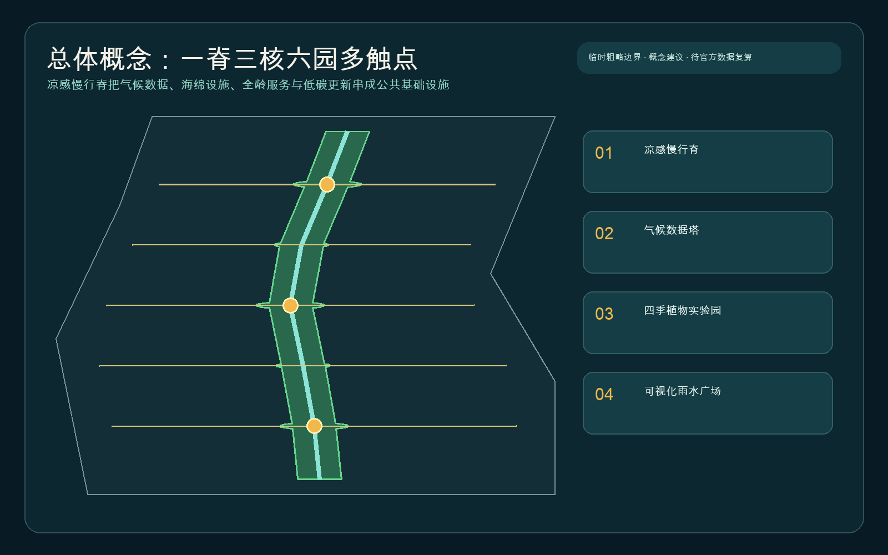
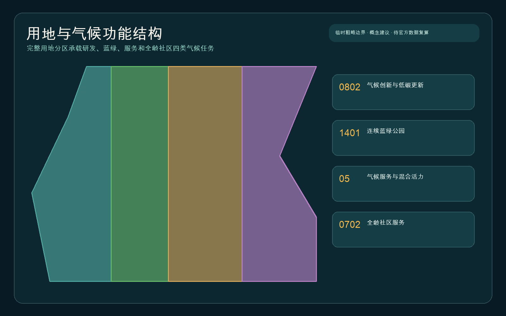
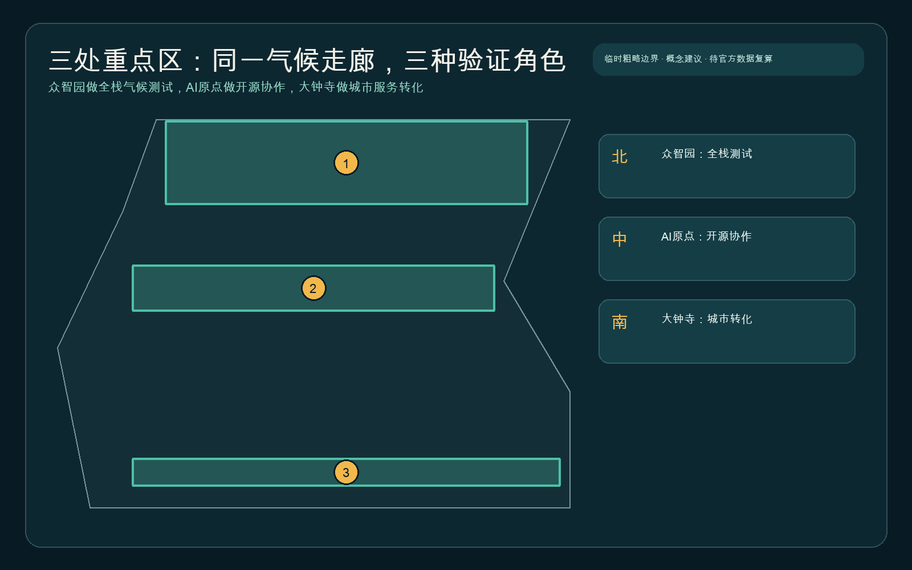
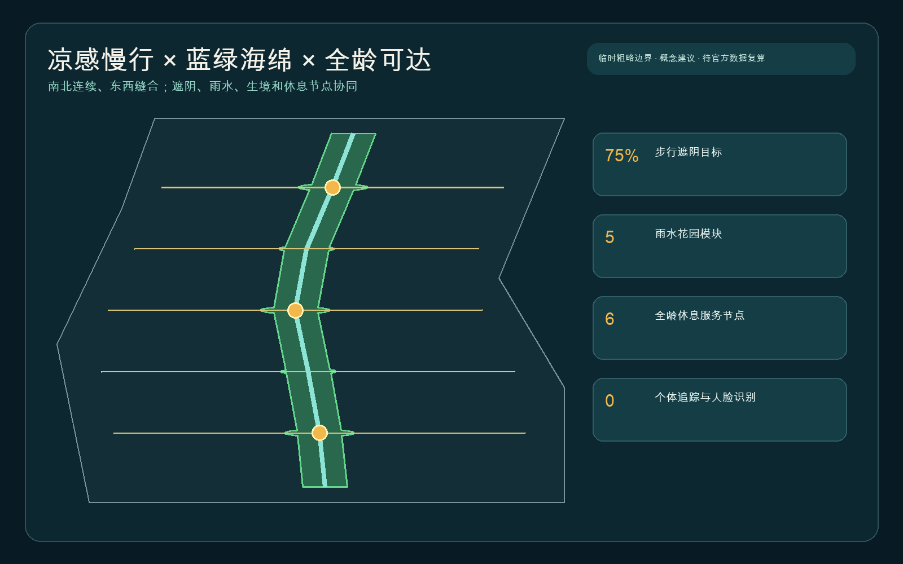
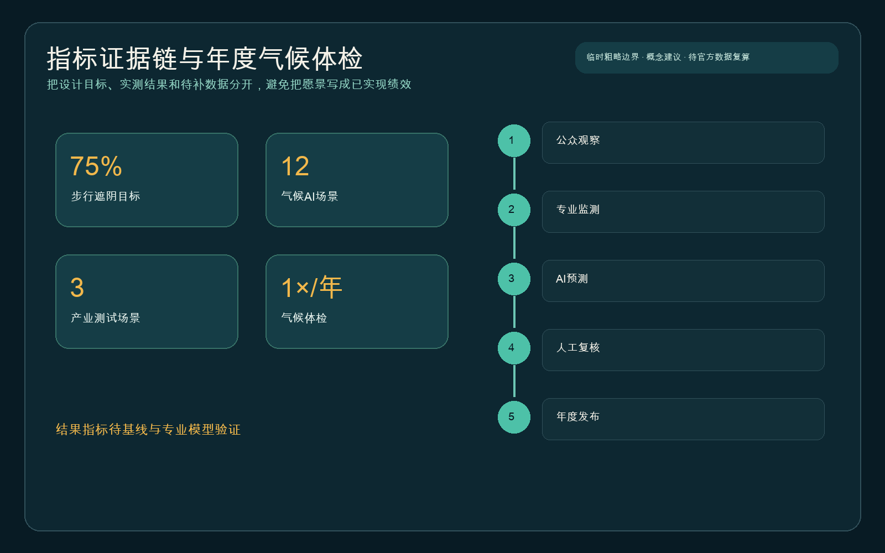

总览地图与三层范围

统筹研究范围讨论生态与气候创新网络；总体设计范围组织凉感慢行脊；三处重点区承担不同验证任务。
用地分区、建筑与更新项目

气候创新与更新
保留优先、性能体检先行；拆改留结论待现状、权属和控规资料。
连续蓝绿公园
林荫、雨水花园和生境踏脚石构成连续公共基础设施。
全龄社区服务
休息、饮水、卫生间、人工帮助和离线导视形成无障碍后备。
重点区域

交通慢行与蓝绿公共空间

AI 场景
01
热岛监测
固定点与移动测温联合，异常只用于提示，由专业人员判断。
02
遮阴路线推荐
按树荫、停歇、坡度和过街条件给出可解释路线，并保留离线导视。
03
海绵设施维护
结合雨量、积水与人工巡检生成工单建议，不自动关闭设施。
04
树木健康识别
影像诊断只做初筛，由园林专业人员复核并记录误报。
05
公共建筑能耗协同
使用授权后的聚合能耗和天气数据发现异常，控制权留给业主。
06
生物多样性观察
公众记录与专业样方并行；敏感物种位置延迟或模糊发布。
07
暴雨安全引导
基于批准的应急信息提示绕行，不能替代官方预警和现场指挥。
08
全龄可达审计
老人、儿童、照护者和轮椅使用者共同核查遮阴、座椅与无障碍断点。
09
低碳更新诊断
建筑体检把围护结构、设备和使用时段分开，先改造后扩建。
10
活动碳预算
气候周活动公开交通、能耗、废弃物与补偿边界，不把估算冒充核证。
11
公众观察校验
上传内容先去除个人信息，抽样复核后才进入年度趋势。
12
开放气候沙盒
向企业和高校开放脱敏样本、评测规则和退出机制，不等于采购承诺。
核心指标
11.41 km²
临时边界复算面积，不作官方面积结论
9.3%
设计绿地几何占比
0.66%
三处气候地标公共空间占比
75%
优先步行路线遮阴目标，不是现状实测值

任务覆盖与自检状态
合规矩阵覆盖公告1.3、1.4、1.5以及agent.1-agent.6共23项要求；正式状态以包内self_check.json和可信CI重跑为准。
公众观察专业监测AI预测人工复核年度发布
来源与假设
| 类型 | 状态 | 用途边界 |
|---|---|---|
| 官方公告与标准 | 可作任务与原则依据 | 不能替代项目官方红线或控规 |
| 临时几何 | provisional_only | 仅生成、展示与入口自检 |
| 气候结果指标 | 待基线 | 热、雨洪、能耗、生物多样性与可达性均需专业数据 |